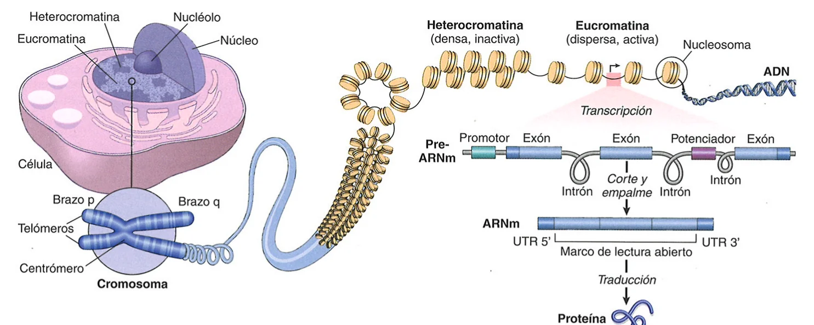
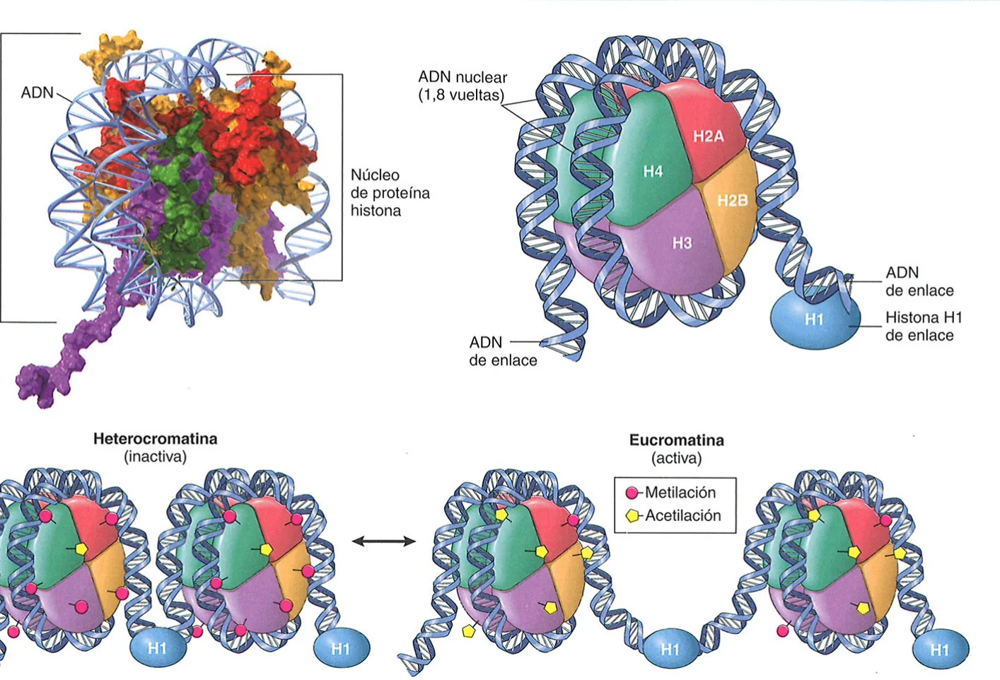
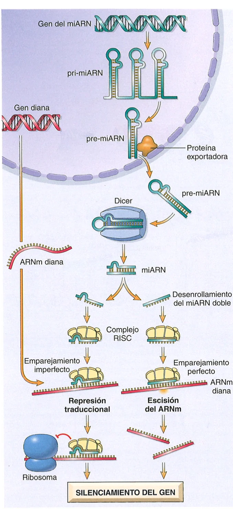
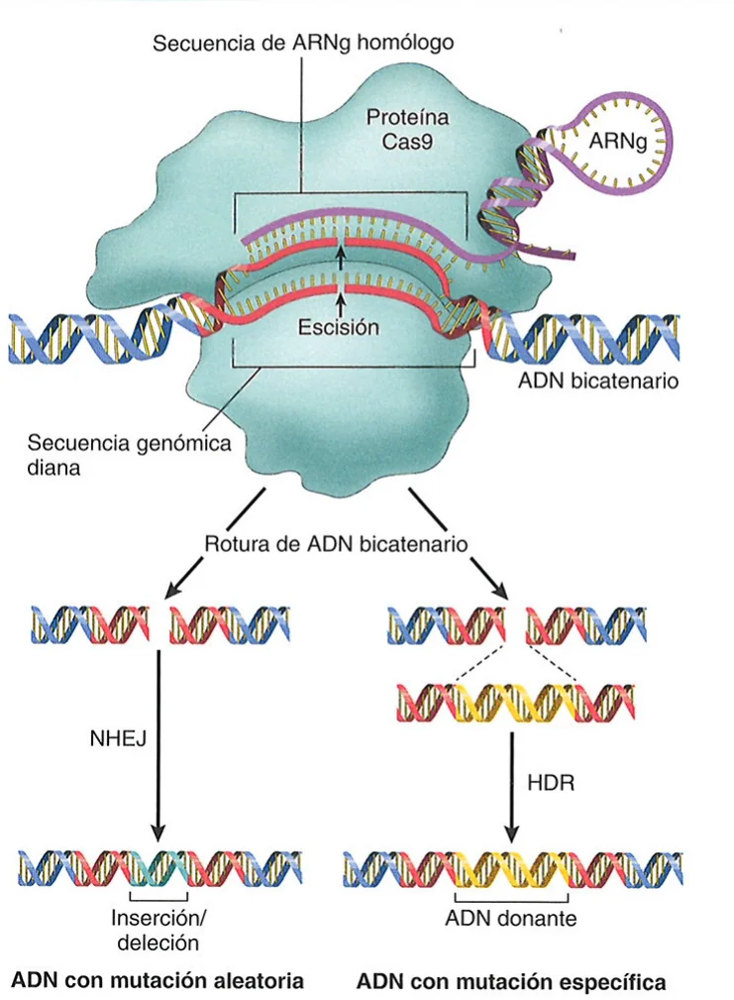
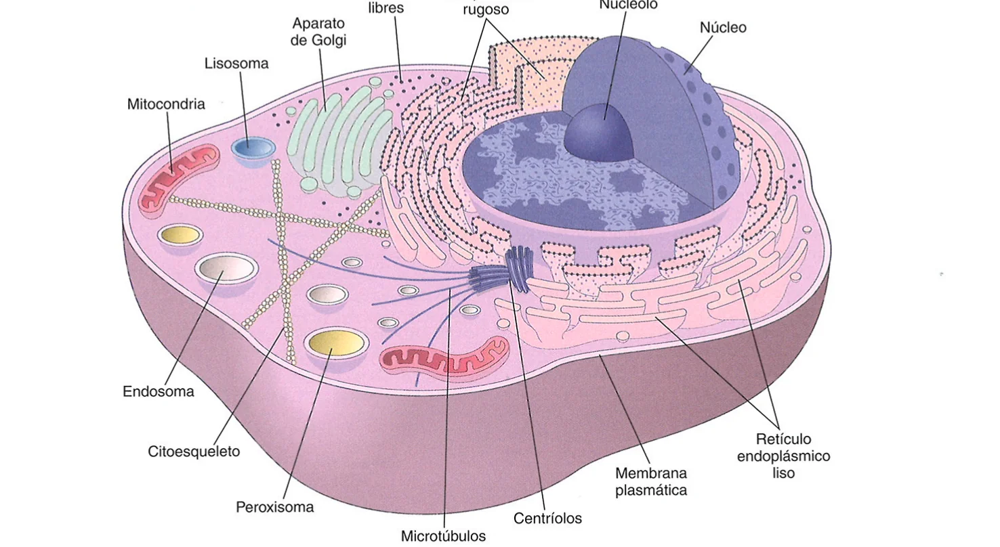
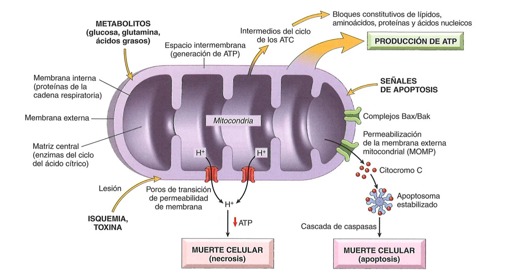
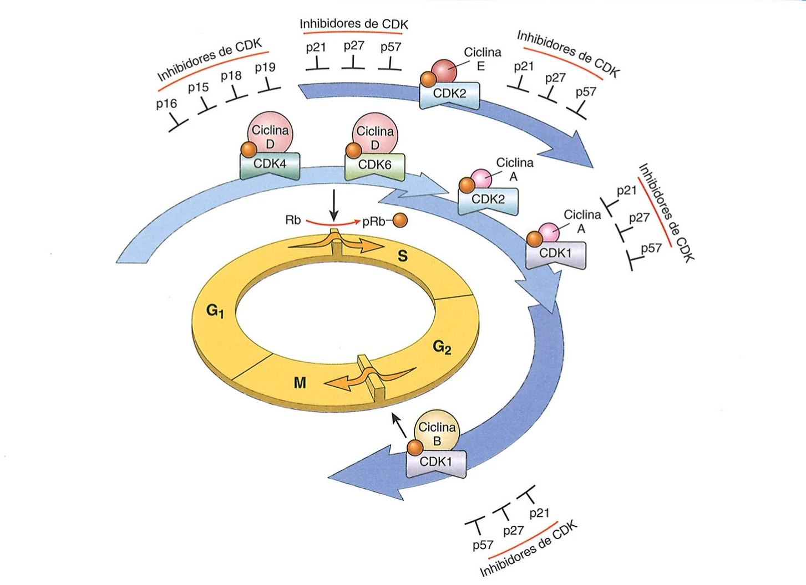
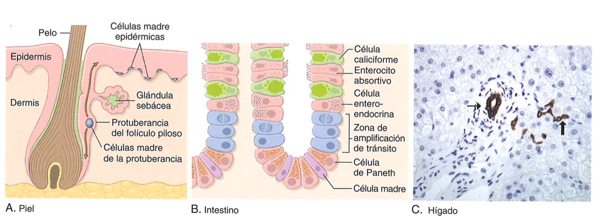

Qué cubre esta guía
Este resumen del Certamen 1 se redactó antes de adoptar la cita por página; se publica sin reescribirlo. El Manual del Certamen 1 incluye el índice tema-clase-Robbins y las fuentes.
Lo esencial en 60 segundos
- Solo 1,5% del genoma codifica proteínas; el ADN no codificante aporta la planificación arquitectural (promotores, ARN reguladores, transposones, telómeros).
- Epigenoma: acetilación de histonas abre la cromatina; metilación de histonas y ADN silencia genes; marcas reversibles, ya diana terapéutica (inhibidores de HDAC).
- miARN silencian genes post-transcripción vía Dicer y RISC: emparejamiento perfecto escinde el ARNm, imperfecto reprime la traducción; CRISPR-Cas9 edita el genoma con ARNg de 20 bases.
- Mitocondria decide la muerte celular: poro de transición de permeabilidad lleva a necrosis; Bax/Bak y citocromo C activan caspasas y apoptosis.
- Degradación: heterofagia y autofagia (LC3) en lisosomas; proteosoma degrada proteínas marcadas con ubicuitina (ligasas E1, E2, E3).
- MEC: membrana basal (colágeno IV + laminina) y matriz intersticial (colágenos fibrilares, elastina, proteoglucanos); fibronectina une integrinas vía motivo RGD.
Ideas clave
- La patología estudia la enfermedad, que se origina a nivel celular, según la intuición de Virchow; en realidad, las alteraciones celulares derivan de perturbaciones moleculares (genes, proteínas y metabolitos).
- Solo alrededor del 1,5% del genoma humano codifica proteínas; la gran mayoría es ADN no codificante, que aporta la "planificación arquitectural" del organismo.
- La expresión génica se regula por modificaciones de histonas y metilación del ADN (epigenoma). Estas marcas son reversibles y ya se exploran como diana terapéutica.
- Los miARN silencian genes después de la transcripción degradando ARNm o reprimiendo su traducción; los ARNlnc modulan la expresión génica por varios mecanismos.
- La técnica CRISPR-Cas9 permite editar el genoma con gran especificidad usando ARN guía artificiales de 20 bases.
- La célula renueva constantemente sus componentes: la degradación ocurre en lisosomas (heterofagia y autofagia) y en el proteosoma (proteínas marcadas con ubicuitina).
- Las mitocondrias generan ATP, aportan metabolitos intermediarios y deciden la vida o la muerte celular: lesión isquémica o tóxica lleva a necrosis; la liberación de citocromo C lleva a apoptosis.
- La matriz extracelular no es un simple relleno: sostiene, regula la proliferación, almacena factores de crecimiento y sirve de armazón para la regeneración tisular.
- Las poblaciones celulares se mantienen por equilibrio entre proliferación, movimiento y muerte, regulado por ciclinas, CDK e inhibidores de CDK, y por las células madre.
Genoma y ADN no codificante
La diferencia entre especies (gusanos y humanos) estriba más en los "planos" genómicos que en los materiales de construcción: las regiones no codificantes aportan la planificación arquitectural. El genoma humano contiene cinco clases principales de secuencias funcionales no codificantes:
| Clase de secuencia no codificante | Función o dato clave |
|---|---|
| Regiones promotoras y potenciadoras | Sitios de unión para factores de transcripción |
| Sitios de unión para organizadores de cromatina | Mantienen estructuras de cromatina de orden superior |
| ARN reguladores no codificantes | Más del 60% del genoma se transcribe a ARN que no se traduce; destacan miARN y ARNlnc |
| Elementos genéticos móviles (transposones) | Más de un tercio del genoma; "genes saltarines" con función poco definida |
| Regiones estructurales (telómeros y centrómeros) | Telómeros: extremos cromosómicos; centrómeros: "anclajes" de los cromosomas |
Un componente importante de los centrómeros es el ADN satélite: fragmentos grandes de secuencias repetidas del orden de megabases, cada repetición de 5 pb a 5 kb.
El capítulo también discute la variación genética normal entre individuos:
| Variante | Características |
|---|---|
| SNP (polimorfismos de un solo nucleótido) | Aparecen en todo el genoma; solo el 1% está en regiones codificantes (regiones codificantes ≈ 1,5% del genoma). Los SNP no codificantes en elementos reguladores alteran la expresión génica y la predisposición a enfermedad. Algunos son neutrales y sirven como marcadores en desequilibrio de ligamiento. Su efecto individual es débil |
| CNV (variantes del número de copias) | Fragmentos grandes de ADN contiguos, de 1.000 a millones de pares de bases, duplicados o deleciones. Explican entre 5 y 24 millones de pb de diferencia entre dos individuos; el 50% afecta secuencias codificantes |
Organización de las histonas y epigenoma
- Los nucleosomas son octámeros de histonas, con dos subunidades cada uno de H2A, H2B, H3 y H4, rodeados por 1,8 vueltas de 147 pb de ADN.
- Entre nucleosomas hay ADN de enlace de 20-80 nucleótidos, asociado a la histona H1.
- Las histonas tienen carga positiva, lo que permite compactar el ADN, cargado negativamente.
- El grado de apertura o cierre de la cromatina se regula mediante marcas dinámicas sobre las histonas: acetilación (abre la cromatina), metilación de ciertos residuos (condensa el ADN y silencia genes) y fosforilación. El propio ADN también puede metilarse, inactivando la transcripción.
- La desregulación del epigenoma participa en neoplasias malignas y en muchas otras enfermedades. A diferencia de los cambios genéticos, muchas alteraciones epigenéticas son reversibles: los inhibidores de HDAC y de la metilación del ADN ya se prueban en distintos cánceres.




Micro-ARN y ARN largo no codificante
Micro-ARN (miARN)
Vía de procesamiento (fig. 1.3):
- Transcripción del gen de miARN: PRI-miARN (primario), procesado en el núcleo.
- Se convierte en pre-miARN: ARN con estructuras en horquilla que forman secuencias bicatenarias.
- Exportación al citoplasma por proteínas transportadoras específicas (exportinas).
- Corte por la enzima Dicer: genera miARN maduros bicatenarios de 21-30 nucleótidos.
- Desenrollamiento e incorporación de una cadena al complejo RISC (complejo silenciador inducido por ARN).
- Emparejamiento con el ARNm diana:
- Emparejamiento perfecto: escisión del ARNm.
- Emparejamiento imperfecto: represión de la traducción.

Figura 1.3. Generación de miARN y su modo de acción: PRI-miARN, pre-miARN en horquilla, corte por Dicer y silenciamiento génico vía el complejo RISC. Robbins y Cotran, Patología estructural y funcional, 10ª ed., Elsevier España, 2021, p. 5. Ver créditos

El resultado en ambos casos es el silenciamiento del gen tras la transcripción. Los ARN de interferencia (ARNpi) sintéticos interactúan con el RISC, reproducen la función endógena de los miARN y se estudian como herramientas de laboratorio (inactivación génica) y agentes terapéuticos frente a genes patógenos, como los oncogenes impulsores de transformación neoplásica.
ARN largo no codificante (ARNlnc)
- Podrían ser entre 10 y 20 veces más numerosos que los ARNm codificantes.
- Silencian la transcripción (algunos potenciadores son en realidad sitios de síntesis de ARNlnc) o expanden la transcripción a partir de promotores génicos por varios mecanismos.
Edición génica
- Su origen inesperado: las repeticiones palindrómicas cortas agrupadas y regularmente espaciadas (CRISPR) y sus genes asociados (Cas, como la nucleasa Cas9).
- En procariotas constituyen una forma de inmunidad adquirida frente a fagos y plásmidos: la bacteria integra porciones del ADN del agente infeccioso como CRISPR, las transcribe como ARN guía y dirige así la Cas9 para escindir el ADN del invasor.
- Aplicación reprogramada: ARN guía (ARNg) artificiales de 20 bases complementarios del ADN objetivo se unen a la Cas9; la Cas9 induce roturas de doble cadena en el sitio de unión.
- La reparación de las roturas puede producir:
- Mutaciones disruptivas aleatorias por unión de extremos no homólogos.
- Introducción precisa de material genético por recombinación homóloga.

Figura 1.5. Edición génica con CRISPR y la nucleasa Cas9: el ARN guía de unas 20 bases dirige la Cas9 para escindir el ADN objetivo. Robbins y Cotran, Patología estructural y funcional, 10ª ed., Elsevier España, 2021, p. 6. Ver créditos - Los componentes (ARNg y Cas, como ADNc o como proteína) pueden introducirse fácilmente en células; su especificidad abre enormes expectativas para la ingeniería genética y el tratamiento de enfermedades.

Mantenimiento celular: membrana plasmática y transporte
Volumen y número de orgánulos (hepatocito típico)
| Compartimento | % de volumen | Número/célula | Función |
|---|---|---|---|
| Citosol | 54% | 1 | Metabolismo, transporte, traducción de proteínas |
| Mitocondrias | 22% | 1.700 | Generación de energía, apoptosis |
| RE rugoso | 9% | 1 | Síntesis de membrana y proteínas exportadas |
| RE liso, Golgi | 6% | 1 | Modificación, clasificación y catabolismo de proteínas; síntesis de hormonas esteroideas y lipoproteínas |
| Núcleo | 6% | 1 | Regulación celular, proliferación, transcripción de ADN |
| Endosomas | 1% | 200 | Transporte intracelular y exportación |
| Lisosomas | 1% | 300 | Catabolismo celular |
| Peroxisomas | 1% | 400 | Metabolismo de ácidos grasos de cadena muy larga |
Membrana plasmática
- Bicapa lipídica con fluidez lateral considerable. Los glucolípidos y la esfingomielina se concentran en la cara extracelular; los gangliósidos tienen azúcares con ácidos siálicos terminales que confieren cargas negativas (reclutamiento de células inflamatorias, fusión espermatozoide-óvulo).
- Existen dominios especializados, como las balsas lipídicas, ricas en glucoesfingolípidos y colesterol, que influyen en la distribución de proteínas de membrana.
- Funciones de las proteínas de membrana: transporte de iones y metabolitos; captación de macromoléculas (en fase líquida y mediada por receptores); interacciones célula-ligando, célula-matriz y célula-célula.
- Las proteínas se asocian a la bicapa por cuatro mecanismos; las proteínas integrales o transmembrana, con segmentos hidrófobos helicoidales, suelen ser poros o transportadores, mientras que las fijadas mediante uniones lábiles suelen mediar señalización.
- La organización intracelular depende del citoesqueleto: filamentos de actina (microfilamentos), queratinas (filamentos intermedios) y microtúbulos. Sostiene la forma y la polaridad celular, clave en epitelios (diferencias entre dominio apical y dominios basolaterales); su pérdida altera, por ejemplo, el transporte transcelular vectorial en el intestino o el túbulo renal.


Transporte a través de membranas
| Mecanismo | Descripción |
|---|---|
| Canales | Poro hidrófilo; el soluto se mueve a favor de gradiente; limitado por tamaño y carga |
| Transportadores/portadores | Necesarios contra gradiente; suelen consumir energía para un cambio conformacional |
| Endocitosis mediada por cavéolas | Cavéolas ("pequeñas cuevas"): invaginaciones no revestidas con caveolina como proteína estructural; captan líquido extracelular y moléculas unidas a receptor (p. ej., folato); ricas en glucoesfingolípidos como las balsas lipídicas |
| Endocitosis mediada por receptores (fosa recubierta) | Invaginaciones revestidas por clatrina, que se ensambla en una rejilla en forma de cesta; en ambos casos se precisa la dinamina, la "pinchasa" que libera las vesículas |
| Captación en fase líquida | Endocitosis de líquido extracelular |
| Fagocitosis | La realizan los fagocitos profesionales (macrófagos, neutrófilos) frente a microbios o restos celulares |
| Exocitosis | Proteínas compactadas en RER y Golgi salen en vesículas secretoras; ejemplos: insulina, citocinas |
| Transcitosis | Movimiento de vesículas entre los compartimentos apical y basolaterial; ejemplos: anticuerpos de la leche materna |
Las vesículas endocitadas van a endosomas iniciales (pH bajo) y luego tardíos, progresivamente acidificados, donde se activan las enzimas proteolíticas.
Citoesqueleto y uniones célula-célula
| Componente | Propiedades |
|---|---|
| Microfilamentos de actina | Monómeros G-actina polimerizan en F-actina, hélices bicatenarias de polaridad definida; se añaden al extremo positivo y se retiran del negativo ("cinta sin fin de la actina"); la miosina se desliza sobre actina mediante hidrólisis de ATP: contracción muscular; las miosinas participan también en transporte vesicular, barrera epitelial y migración celular |
| Filamentos intermedios | Fibrillas de 10 nm; incluyen queratinas y láminas nucleares; polímeros similares a cuerdas que no se reorganizan activamente: aportan fuerza tensional; tejido-específicos, útiles para diagnóstico; se anclan a desmosomas y hemidesmosomas |
| Microtúbulos | Con proteínas motoras (p. ej., kinesinas y dineínas) para el transporte orgánular |
| Unión | Composición y función |
|---|---|
| Desmosomas | Cadherinas transmembrana unidas a filamentos intermedios; adhesión célula-célula |
| Hemidesmosomas | Conectores transmembrana del tipo de las integrinas, que unen el citoesqueleto a la MEC; albergan los complejos de adhesión focal, con más de 100 proteínas, que generan señales ante estrés de cizallamiento (endotelio, miocardiocitos) |
| Uniones comunicantes (en hendidura) | Poros de 1,5-2 nm llamados conexones, formados por hexámeros de conexinas (uno por célula); permiten paso de iones, nucleótidos, azúcares, aminoácidos y vitaminas; su permeabilidad cae al bajar el pH o subir el calcio intracelular; en los miocardiocitos permiten flujos de calcio que hacen del miocardio un sincitio funcional |
Maquinaria biosintética retículo endoplásmico y aparato de Golgi
- El RE es el sitio de síntesis de todas las proteínas transmembrana y de los lípidos de la membrana plasmática y de los orgánulos. Proteínas exportadas y transmembrana se sintetizan en el RE rugoso (con ribosomas adheridos); las proteínas citosólicas, en ribosomas libres. El RE liso sintetiza hormonas esteroideas y lipoproteínas, y transforma compuestos hidrófobos en hidrosolubles para su exportación.
- El exceso de proteínas mal plegadas produce "estrés del RE" (respuesta a proteínas no plegadas), que puede terminar en apoptosis.
- El aparato de Golgi modifica, clasifica y distribuye las proteínas; marca las enzimas lisosómicas con la señal de manosa-6-fosfato (M6P) para dirigirlas a los lisosomas.
Eliminación de desechos lisosomas y proteosoma
Tres vías de degradación:
| Vía | Mecanismo |
|---|---|
| Heterofagia | Lisosomas se fusionan con endosomas y fagosomas para degradar material internalizado; los productos finales nutren al citosol o se expulsan por exocitosis |
| Autofagia | Orgánulos senescentes o proteínas desnaturalizadas quedan envueltos en una vacuola de doble membrana derivada del RE, marcada por la proteína LC3 (autofagosoma); luego se fusionan con lisosomas; implicada en escasez de nutrientes, defensa ante infecciones intracelulares, reparación y apoptosis; requiere productos de los genes Atg |
| Degradación proteosómica | Proteínas citosólicas destinadas al recambio se marcan con múltiples moléculas de ubicuitina mediante las enzimas ligasas E1, E2 y E3; el proteosoma escinde la proteína en fragmentos peptídicos; actúa sobre proteínas dañadas por radiación UV, calor, estrés oxidativo, pH anormal, mutaciones o infecciones víricas |
Datos lisosómicos: pH ácido, enzimas como proteasas, nucleasas, lipasas, fosfatasas y sulfatasas; la señal M6P se añade en el Golgi y la proteína llega mediante receptores de M6P en la red trans del Golgi.
Metabolismo celular y función mitocondrial
- La mayor parte del ATP celular se genera por fosforilación oxidativa mitocondrial; las mitocondrias también aportan metabolitos intermediarios para el anabolismo y sintetizan macromoléculas como el hemo.
- Estructura: membrana externa; espacio intermembrana con la cadena respiratoria en la membrana interna; matriz con enzimas del ciclo del ácido cítrico (ciclo del ácido tricarboxílico).
- Papel en la muerte celular (fig. 1.11):
- Lesión isquémica o tóxica induce un poro de transición de permeabilidad en la membrana interna que disipa el gradiente protónico intermembranoso: la célula no puede generar ATP y muere por necrosis.
- Las señales apoptóticas oligomerizan las proteínas Bax/Bak y provocan permeabilización de la membrana externa mitocondrial (MOMP); se libera el citocromo C, que estabiliza el apoptosoma y activa la cascada de caspasas, con muerte por apoptosis.

Figura 1.11. Funciones de las mitocondrias: generación de ATP, metabolismo intermediario y papel en la muerte celular por necrosis (poro de transición de permeabilidad) o apoptosis (liberación de citocromo C). Robbins y Cotran, Patología estructural y funcional, 10ª ed., Elsevier España, 2021, p. 16. Ver créditos

Activación celular y señalización
Grupos de señales a las que responden las células:
- Peligro y patógenos: detección innata de células dañadas (señales de peligro) y de invasores extraños.
- Contactos célula-célula, mediados por moléculas de adhesión y uniones comunicantes (paso de calcio, AMPc y otros segundos mensajeros).
- Contactos célula-MEC, mediados sobre todo por integrinas.
- Factores solubles (factores de crecimiento, citocinas).
La pérdida de comunicación intercelular ("controles sociales") produce crecimiento descontrolado (cáncer) o respuestas dañinas al estrés (shock). Muchas células mueren por apoptosis si carecen de señales exógenas de supervivencia.
Tipos de receptores
| Receptor | Características |
|---|---|
| Tirosina cinasa receptora | Ligandos de enlaces cruzados (p. ej., factores de crecimiento derivados de plaquetas); activan dominios tirosina cinasa intrínsecos en las colas citoplásmicas |
| Tirosina cinasa no receptora | Receptores sin actividad catalítica (inmunorreceptores, algunos receptores de citocinas, integrinas); usan cinasas citosólicas; prototipo: Src, con dominios de homología Src (SH2 que se unen a residuos fosforilados y SH3 que median interacciones proteína-proteína ricas en prolina) |
| GPCR (acoplados a proteína G) | Siete dominios transmembrana (receptores en serpentina); más de 1.500 identificados; el ligando permite el intercambio de GDP por GTP en la proteína G; generan AMPc y inositol-1,4,5-trifosfato (IP3), este último libera calcio del RE |
| Receptores nucleares | Ligandos liposolubles que difunden a la célula y se unen al receptor, que influye directamente en la transcripción |
| Notch | El ligando en la célula vecina induce escisión de Notch; el fragmento Notch IC entra al núcleo y modula la transcripción |
Vías de transducción relevantes mencionadas
- RAS: se activa por intercambio de GDP por GTP y queda inactivado al hidrolizar GTP; recluta cascadas como RAF/MAPK (activación de la transcripción y proteína MYC) y PI3K/Akt/mTOR.
- Wnt: frizzled y co-receptor Lrp5/Lrp6 estabilizan beta-catenina, que migra al núcleo y activa la transcripción de genes diana.
- Los factores de transcripción se unen a promotores y potenciadores, reclutan coactivadores, enzimas modificadoras de histonas, complejos remodeladores de cromatina y la ARN polimerasa (complejo enzimático de múltiples proteínas).
Factores de crecimiento y receptores principales
| Factor | Datos esenciales |
|---|---|
| HGF (factor de crecimiento hepatocitario) | Actúa como morfógeno en el desarrollo, favorece la migración (factor de dispersión) y la supervivencia de hepatocitos; producido por fibroblastos y células mesenquimatosas, endoteliales y hepáticas no hepatocitarias; se secreta como pro-HGF y se activa por serina proteasas de la zona de lesión; su receptor es MET (tirosina cinasa), sobreexpresado o mutado en carcinomas renales y papilares tiroideos; se evalúan inhibidores de MET como anticancerígenos |
| PDGF (factor de crecimiento derivado de plaquetas) | Familia de proteínas de dos cadenas; isoformas activas AA, AB y BB; las isoformas CC y DD requieren escisión proteolítica; almacenado en gránulos de plaquetas; también producido por macrófagos activados, células endoteliales, musculares lisas y tumorales; receptores PDGFR-alpha y beta (tirosina cinasas); proliferación y quimiotaxis de fibroblastos, células endoteliales y musculares lisas |
Funciones de los factores de crecimiento: favorecer la entrada al ciclo celular, eliminar bloqueos de la progresión, impedir la apoptosis y potenciar la síntesis de componentes para la división celular (ácidos nucleicos, proteínas, lípidos, hidratos de carbono). No son solo mitógenos: también participan en la morfogenia embrionaria.
Matriz extracelular
Funciones de la MEC:
- Soporte mecánico para fijación, migración y polaridad celulares.
- Regulación de la proliferación: fija y expone factores de crecimiento (algunos latentes se activan en focos de lesión o inflamación), y señala a través de integrinas.
- Armazón estructural para la renovación tisular: la integridad de la membrana basal o del estroma es imprescindible para una regeneración organizada.
- Fundamento de microambientes tisulares; p. ej., en el riñón forma parte del aparato de filtración.
Dos formas básicas:
| Forma | Localización y origen | Componentes principales |
|---|---|---|
| Matriz intersticial | Espacios entre células estromales del tejido conjuntivo y entre epitelio y estructuras vasculares y de músculo liso; síntesis por células mesenquimatosas (fibroblastos) | Colágenos fibrilares, elastina, proteoglucanos, hialuronano |
| Membrana basal | Superficie entre epitelio y tejido conjuntivo; síntesis por el propio epitelio y las células mesenquimatosas subyacentes; malla plana y porosa | Colágeno de tipo IV (no fibrilar, amorfo) y laminina |
Tres familias de componentes:
| Familia | Ejemplos y función |
|---|---|
| Proteínas estructurales fibrosas | Colágenos (fuerza de tensión) y elastina (retracción y elasticidad gracias a sus segmentos hidrófobos que se abren al estiramiento y se pliegan al relajarse) |
| Geles hidratados | Proteoglucanos y hialuronano; los azúcares sulfatados con carga negativa atraen sodio y agua: matriz viscosa y compresible; aportan resistencia a la compresión y lubricación |
| Glucoproteínas adhesivas | Fibronectina, laminina; conectan la MEC con las células mediante integrinas |
Proteoglucanos y regulación
- El proteoglucano de la MEC lleva sulfato de heparano, que secuestra factores de crecimiento como el factor de crecimiento básico de fibroblastos (bFGF, FGF-2). El sindecano es un proteoglucano de la superficie celular, con proteína central transmembrana y cadenas laterales de glucosaminoglucano, que presenta bFGF al receptor de FGF y lo activa. Así, la MEC y los proteoglucanos regulan la actividad de los factores de crecimiento.
- Por ejemplo, azúcares sulfatados como el sulfato de condroitina y el sulfato de queratano participan en las "cerdas" de los proteoglucanos.
Colágeno: síntesis y tipos
- Se han identificado varios tipos de colágeno; el OCR no es claro sobre el número exacto, por lo que no se fija cifra. Cada molécula es una triple hélice de tres cadenas polipeptídicas entrelazadas a modo de cordón.
- Vía de biosíntesis (fig. 1.16): las cadenas de procolágeno se sintetizan en el RE; allí se hidroxilan prolina y lisina, y se glucosila esta última; tres cadenas se alinean para formar la triple hélice de procolágeno; tras la secreción se escinden los propéptidos (por procolágeno endopeptidasa/peptidasas N y C), y se produce el entrecruzamiento lateral mediante la lisilo oxidasa sobre residuos previamente hidroxilados.
- Espectro de tipos con datos del texto:
- Tipos I, V y XI: heterotrimeros.
- Tipos II y III: homotrimeros.
- Tipo I: colágeno de la matriz intersticial abundante en la mayoría de los tejidos.
- Tipo II: cartílago.
- Tipo III: colágeno fino ("reticulina"), p. ej., en vasos y heridas en reparación.
- Tipo IV: membrana basal (no fibrilar, amorfo).
- En los colágenos tipo I y II el procesamiento del N-propéptido es completo; en los tipos V y XI permanece parcialmente unido, lo que regula el tamaño de las fibrillas.
- Defectos primarios o de procesamiento del colágeno producen enfermedades genéticas (p. ej., osteogénesis imperfecta por defectos del tipo I, y el grupo de los Ehlers-Danlos), en las que las manifestaciones dependen del colágeno predominante en cada tejido.
Glucoproteínas adhesivas y integrinas
| Molécula | Domicilio | Características |
|---|---|---|
| Fibronectina | Matriz intersticial | Dimero con enlaces disulfuro; dominios de unión a heparano, fibrina, colágeno (incluido tipo IV), receptores de superficie y células; el motivo RGD (arginina-glicina-ácido aspártico) media la unión a integrinas |
| Laminina | Membrana basal | Molécula con forma de cruz, multidominio; une colágeno tipo IV, otros componentes de la MEC y receptores celulares; presenta un dominio de unión a integrinas |
| Integrinas | Membrana celular | Heterodímeros transmembrana (cadenas alfa y beta); une la MEC con el citoesqueleto; en los complejos de adhesión focal reclutan vinculina, talina, paxilina, tensina y alfa-actinina, y activan cinasas y cascadas de señalización; participan en la adhesión firme y la migración de leucocitos a través del endotelio en la inflamación, y en la agregación plaquetaria |
Mantenimiento de las poblaciones celulares: proliferación y ciclo celular
- El mantenimiento de un órgano exige equilibrio entre proliferación, movimientos de las células y muerte celular.
- Fases del ciclo: G0 (reposo), G1, S (duplicación del ADN), G2 y M (mitosis), con duplicación previa del centrosoma.
- Puntos de control ("referencias") y vigilancia:
- Punto de restricción entre G1 y S: vigila el daño del ADN antes de comprometer la replicación.
- Punto G2/M: comprueba daño del ADN y ADN no duplicado antes de la mitosis.
- Motor molecular del ciclo: complejos de ciclina y quinasas dependientes de ciclinas (CDK), frenados por inhibidores:
| Complejo ciclina-CDK | Fase que regula |
|---|---|
| Ciclina D-CDK4 y ciclina D-CDK6 | Fase G1 (fosforilación de Rb) |
| Ciclina E-CDK2 | Transición G1/S |
| Ciclina A-CDK2 y ciclina A-CDK1 | Fase S |
| Ciclina B-CDK1 | Transición G2 a M |
| Familia inhibidora | Miembros | Alcance |
|---|---|---|
| Inhibidores INK4 | p15, p16, p18, p19 | Específicos de ciclina D-CDK4 y ciclina D-CDK6 |
| Inhibidores generales | p21, p27, p57 | Inhiben todas las CDK |
La progresión clave hacia S depende de la fosforilación de la proteína Rb por los complejos de ciclina D con CDK4 y CDK6, y por ciclina E-CDK2.


Células madre
- Definición: células con capacidad de autorrenovación y de generar células diferenciadas.
- Totipotenciales: solo en desarrollo temprano (cigoto); pueden generar el espectro completo de tejidos.
- Pluripotenciales: células de la masa celular interna del blastocisto, llamadas células embrionarias (ES); las células ES se cultivan in vitro y pueden inducirse a diferenciarse en derivados del endodermo, mesodermo y ectodermo.
- Multipotenciales o de estirpe específica: células madre adultas; reemplazan células dañadas y mantienen los tejidos en los que residen, con capacidad de diferenciación limitada a ciertas estirpes.
Tipos de división de las células madre:
| Tipo de división | Descripción |
|---|---|
| Asimétrica | Una hija entra en diferenciación; la otra conserva la autorrenovación |
| Simétrica | Ambas hijas conservan autorrenovación; tiene lugar al principio de la embriogenia, en la expansión de las poblaciones madre |
El ejemplo fisiológico más claro es el epitelio de la piel: las células madre de la capa basal se dividen, y las hijas se diferencian de forma progresiva a medida que migran hacia las capas superiores, hasta morir y descamarse. En la homeostasis existe un equilibrio entre replicación/autorrenovación/diferenciación de las células madre y muerte de las células terminales diferenciadas.


Medicina regenerativa
- Apuesta terapéutica: identificar, aislar, expandir y trasplantar células madre para repoblar tejidos con poca regeneración intrínseca (miocardio, neuronas) o generar órganos; p. ej., células beta secretoras de insulina en un diabético.
- Problemas: rechazo inmunológico del injerto, e integración y funcionalidad insuficiente de las células trasplantadas (limitación reconocida en el texto).
- Solución a los obstáculos de compatibilidad: células madre pluripotenciales inducidas (iPS); se introducen en células diferenciadas del paciente (p. ej., fibroblastos) genes de troncalidad que las reprograman al estado de células ES; después pueden diferenciarse in vitro en estirpes de endodermo, mesodermo o ectodermo, y utilizar células propias del paciente que evitan el rechazo. A fecha del texto, su aplicación clínica práctica permanece limitada, aunque su potencial terapéutico es notable.
Puntos de examen
- Solo el 1,5% del genoma codifica proteínas; más del 60% se transcribe a ARN no traducido; más de un tercio son elementos móviles (transposones).
- Nucleosoma: octámero con dos copias de H2A, H2B, H3, H4, 1,8 vueltas de ADN de 147 pb; ADN de enlace de 20-80 nucleótidos con histona H1.
- Acetilación de histonas abre la cromatina; metilación de ciertos residuos y del ADN silencia genes; las alteraciones epigenéticas son reversibles y ya hay terapias: inhibidores de HDAC y de metilación del ADN en cáncer.
- miARN: PRI-miARN → pre-miARN (horquilla) → exportación al citoplasma → corte por Dicer → miARN maduro de 21-30 nucleótidos → complejo RISC → escisión del ARNm (emparejamiento perfecto) o represión de la traducción (imperfecto).
- ARNlnc: 10-20 veces más numerosos que los ARNm.
- CRISPR: el ARN guía artificial de 20 bases dirige la nucleasa Cas9, que rompe el ADN de doble cadena; la reparación puede ser por unión de extremos no homólogos (mutagénesis) o recombinación homóloga (edición precisa).
- Hepatocito: el citosol ocupa el 54% del volumen; las mitocondrias, el 22%, con unas 1.700 por célula; los demás orgánulos son minoritarios.
- Mitocondrias: poro de transición de permeabilidad con lesión tóxica o isquémica → pérdida del gradiente protónico → necrosis; oligomerización de Bax/Bak (MOMP) → salida de citocromo C → apoptosoma → caspasas → apoptosis.
- Catabolismo: heterofagia, autofagia (doble membrana del RE marcada por LC3, genes Atg) y proteosoma (rotulaje con ubicuitina mediante ligasas E1, E2, E3).
- Señalización: enzima lisosómica marcada con manosa-6-fosfato (M6P) en el Golgi; GPCR con 7 dominios transmembrana y más de 1.500 receptores; tirosina cinasa no receptora prototipo Src con dominios SH2 y SH3.
- Factores de crecimiento: HGF (receptor MET, mutado en carcinomas renal y tiroideo papilar); PDGF (isoformas AA, AB, BB activas; CC y DD necesitan proteólisis).
- MEC: membrana basal = colágeno tipo IV + laminina; matriz intersticial = colágenos fibrilares (tipos I, V y XI son heterotrimeros; tipos II y III homotrimeros), elastina, proteoglucanos, hialuronano; fibronectina liga integrinas mediante el motivo RGD; el entrecruzamiento del colágeno depende de la lisilo oxidasa.
- Ciclo celular: transición G1/S con ciclina D-CDK4/6 y ciclina E-CDK2 (fosforilación de Rb); S con ciclina A-CDK2/CDK1; G2/M con ciclina B-CDK1; inhibidores INK4 (p15, p16, p18, p19) específicos de ciclina D-CDK4/6 y p21, p27, p57 inhibidores universales.
- Células madre: totipotenciales (cigoto), pluripotenciales (masa celular interna del blastocisto, células ES), adultas multipotenciales; división asimétrica (una hija se diferencia, otra renueva) y simétrica (ambas renuevan, durante la embriogenia).
- iPS: reprogramación de células somáticas (p. ej., fibroblastos) del paciente mediante genes de troncalidad, que evita el rechazo inmunológico; ejemplo potencial: células beta secretoras de insulina para la diabetes.
Figuras del capítulo
Toca una miniatura para volver a la figura en su sección.